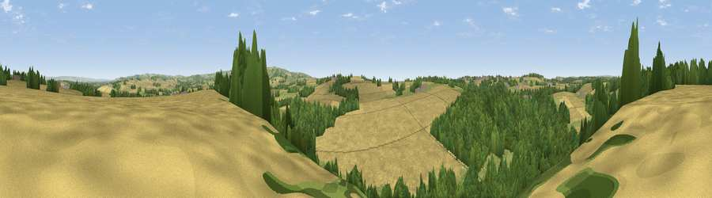

Viewpoint near High Hutton
#21343 in England · top 42% of its area beats it · near High HuttonWhere it is
The exact computed spot (SE 75075 67425). Click the marker for map links.
The view, rendered

A 360° render of this exact spot computed from the terrain model, tree cover and land cover — summer colours, afternoon light, calibrated against photographs of famous viewpoints. Real trees, hedges and buildings will differ in detail.
The panorama
Grey silhouette: terrain skyline in each direction (720 bearings, Earth curvature and refraction included). Dashed green: skyline with trees (+15 m) and buildings (+8 m) as obstacles. Blue strip: how far the ground is visible on each bearing.
Where the view opens
Wedge length = distance to the farthest visible ground on that bearing (vegetation-aware). Rings at 10, 25 and 50 km.
What fills the view
44% cropland · 36% woodland · 19% grassland
Angular shares of the visible panorama (visual magnitude), not map area. Landscape diversity 0.47 (0–1 Shannon).
Key numbers
More beautiful places nearby
The staircase of upgrades: each row has a higher view potential than everything closer. Driving times are estimates from straight-line distance, calibrated against real road routing — check an actual route before setting out.
| Place | Direction | Drive | Score |
|---|---|---|---|
| Viewpoint near Whitwell on-the-Hill | WSW · 3 km | ~8 min | 59.0 |
| Viewpoint near Amotherby | N · 4 km | ~9 min | 65.5 |
| Viewpoint near Coneysthorpe | NNW · 6 km | ~13 min | 65.8 |
| Viewpoint near Birdsall | SE · 6 km | ~14 min | 71.8 |
| Viewpoint near Leavening | SE · 7 km | ~14 min | 73.7 |
| Viewpoint near Acklam | SE · 8 km | ~17 min | 73.8 |
| Viewpoint near Ampleforth | NW · 19 km | ~33 min | 76.6 |
| Viewpoint near Kilburn | WNW · 28 km | ~44 min | 79.3 |
54.09726, -0.85351 · source: screening · position refined by local search. Computed location — check access rights before visiting.